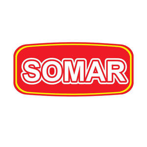

Trade Mark Journal No.2025/027 4 July 2025
UK00004220208 17 June 2025 (29,30,32)

- Class 29
- Vegetables, processed; Pork loin; Hummus [chickpea paste]; Vegetable salads; Processed legumes; Fresh meat; sliced meat; cured meats; smoked meats; packaged meats; Pork cutlets; Frozen vegetables; Kielbasa; Canned pork; Sliced meat; Canned cooked meat; Preserves of poultry; Salted meats; Packaged meats; Smoked fish; Beef steaks; Luncheon meats; Vegetables, preserved; Dolmas; Frozen meat; Vegetable mousses; Fish, preserved; Freeze-dried vegetables; Steaks of meat; Air-dried sausages; Pork steaks; Bottled vegetables; Pork; Cut vegetables; Corned beef; Cooked meats; Prepared meat; Vegetables, cooked; Mincemeat [chopped meat]; Preserved vegetables; Fish, tinned; Meat, preserved; Pickled vegetables; Tuna in oil; Grilled vegetables; Bologna; Sausage meat; Black pudding; Pre-cut vegetables; Mortadella; Steaks of fish; Pepperoni; Tuna fish [preserved]; Meat, tinned; Saveloys; Pork preserves; Prepared meals made from meat [meat predominating]; Chorizo; Pre-cut vegetable salads; Fish in olive oil; Salted vegetables; Roast meat; Vegetables, tinned; Freeze-dried meat; Preserved vegetables (in oil); Knockwurst; Dried meat; Smoked meats; Caponata; Pickled fish; Pulled pork; Meat preserves; Meat; Vegetables, dried.
- Class 30
- Coffee; Tea; Cocoa; Rice; Pasta; Dried and fresh pastas, noodles and dumplings; Tapioca; Sago; Flour; Cereal preparations; Bread; Confectionery; Non-medicated candy; Chocolate; Ice milk [ice cream]; Sherbets [ices]; Sugar; Honey; Treacle; Yeast; Baking powder; Salt; Condiments; Seasonings; Dried herbs; Vinegar; Sauces; Ice [frozen water]; Ice cream; Golden syrup; Chocolate candies; Sugarless sweets; Sweetmeats [candy].
- Class 32
- Beer; Soft drinks; Mineral and aerated waters; Fruit juice beverages; Syrups for beverages.
TRUST IN FOOD spółka z ograniczoną odpowiedzialnością
Representative: Stobbs